Ham Fair 2003
Ham Fair 2002
Ham Fair 2001
Ham Fair 2000
Ham Fair 1999
 |
Flash Newsへ |
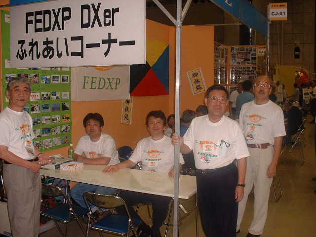
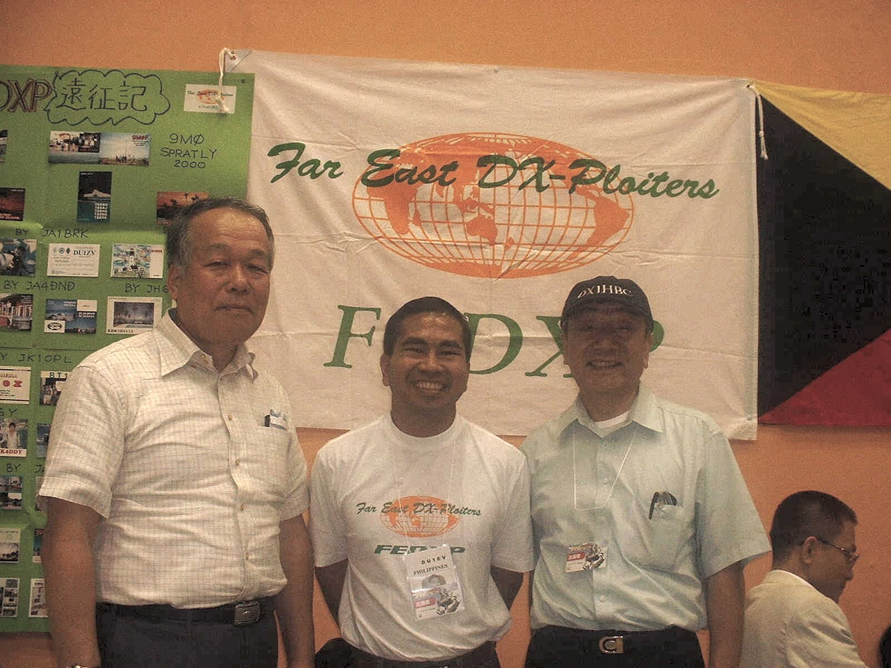
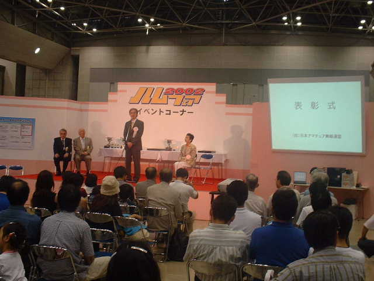
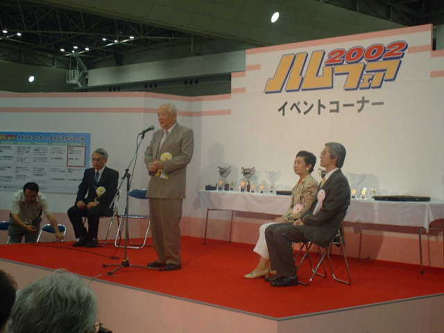
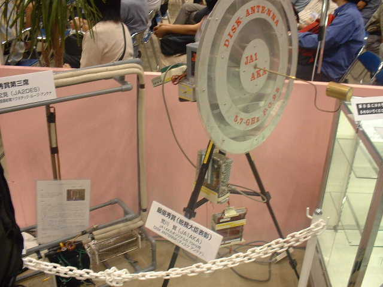
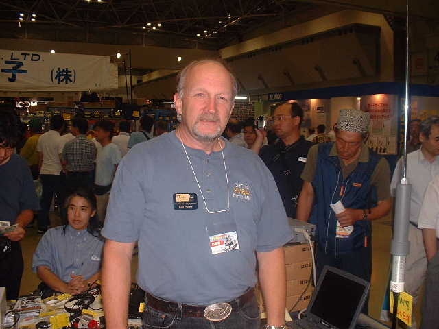
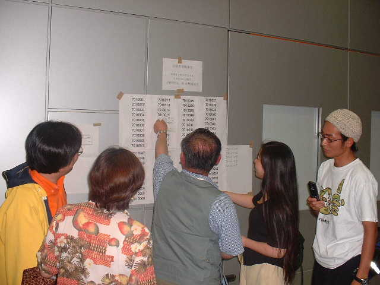
|
24日(土)の夕方は、東京ビッグサイト隣りのワシントンホテルでDX Meetingが開かれた。
5T5BM、DU1EV、N6BT、SM0AGD/OTG、VR2'sなど海外からの参加者10人を加えた、140人を超える参加者で賑わった。 |
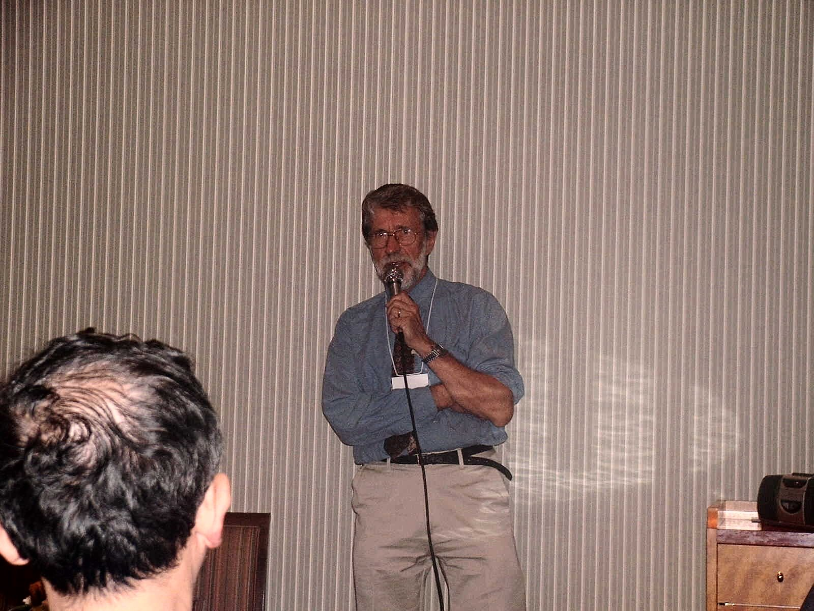
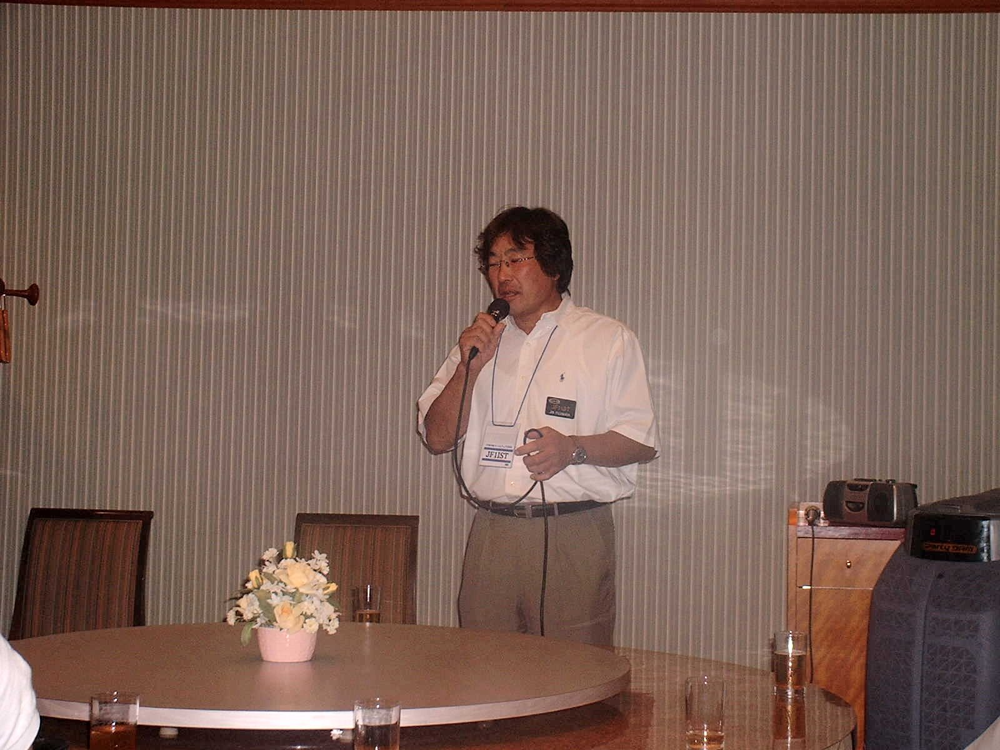
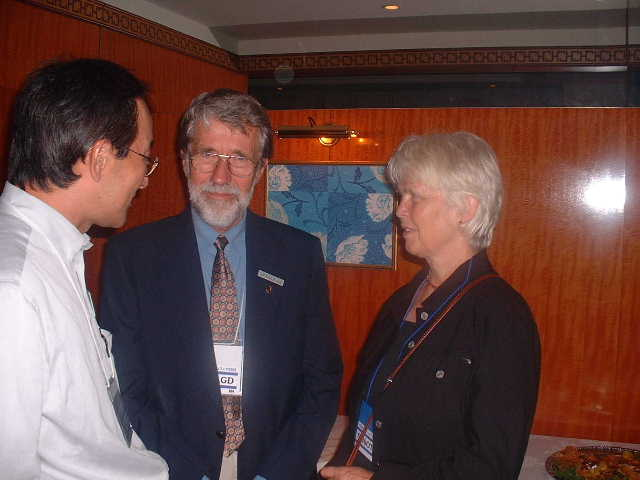
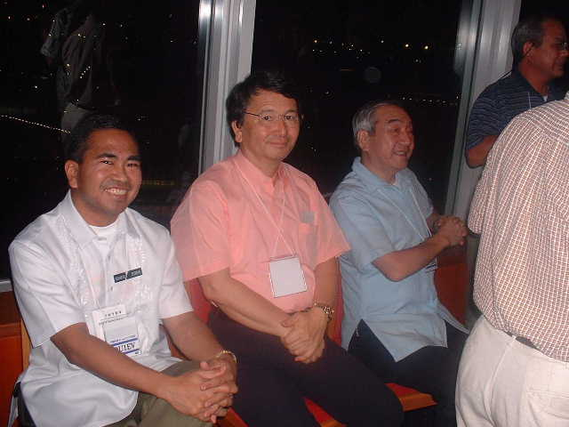
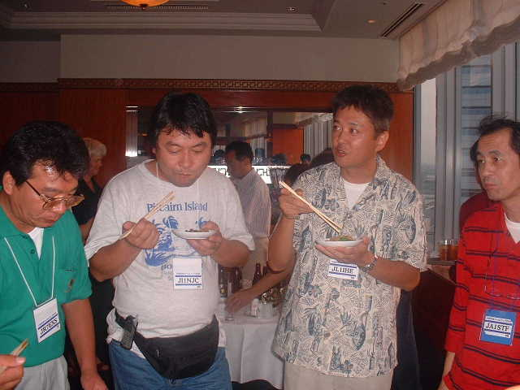
|
Flash Newsへ |